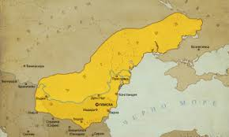
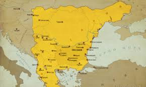
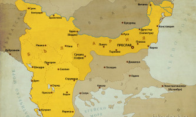

THE GREAT HISTORY OF BULGARIA
ВЪЗНИКВАНЕ И РАЗВИТИЕ (681г - 1018г.)



Първата българска държава, наричана от историците и Дунавска България е първоначално ханство,а от коронясването на Симеон I Велики за цар – империя, просъществувала на Балканския полуостров и прилежащите му части от Югоизточна Европа от 681 до 1018 г. Неин основател е хан Аспарух, който след разпадането на Велика България довежда част от прабългарските племена в днешните Бесарабия и Добруджа, където се съюзява с местните славянски племена. Категоричната победа на прабългарите в битката при Онгъла през 680 г. води до подписване на мирен договор, с който Византия де факто признава новосъздадената държава и се принуждава да ѝ плаща данък. Столицата първоначално е Плиска, а от IX век – Велики Преслав. След превземането му от Киевска Рус в края на X век, се премества в Скопие и Охрид. Най-голямото си разширение Първото българско царство достига през IX век, когато към първоначалните земи по двата бряга на Долни Дунав са присъединени области в Тракия и Македония, части от днешна Албания, Унгария и Словакия, цяла Сърбия и Румъния, а също и част от Северното Черноморие (до река Днепър). >През същия период се наблюдава централизация на държавното управление, тя е съпроводена с обединяването на разнородните етнически групи от населението в средновековната българска народност, чийто език се развива на основата на славянския. През 864 – 866 г. при княз Борис I православното християнство става държавно вероизповедание, което води до значителни промени в културния живот на държавата. Това довежда до т. нар. Златен век при цар Симеон Велики. При същия владетел българите правят продължителни, но безуспешни опити да завладеят столицата на Източната Римска империя – Константинопол (наричана от прабългарите и славяните „Цариград“). Базиликата в Плиска e символ на мощта на Първата Българска държава, както и неин културен център. Българо-византийските войни, наред с нашествията на унгарци (маджари), печенеги и руси, водят през различните периоди до разрастване и отслабване на българската държава, което завършва с нейното падане под византийска власт през 1018 г.
Задай въпрос
THE GREAT HISTORY OF BULGARIA